Diverse Regional Cuisines
North Indian cuisine features wheat-based items like roti and rich gravies; South Indian cuisine emphasizes rice, coconut, and fermented foods like dosa and idli.
Explore more on Wikipedia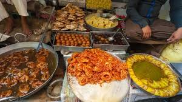
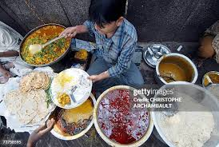
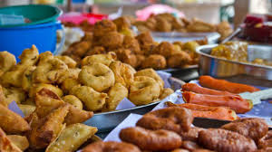
Street Food Culture
Cities like Delhi (chaat), Mumbai (vada pav), and Kolkata (kathi rolls) are famous for vibrant street foods, blending spicy, tangy, and sweet flavors.
Explore more on Wikipedia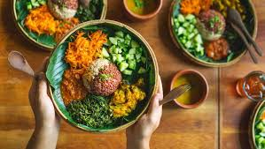
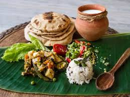
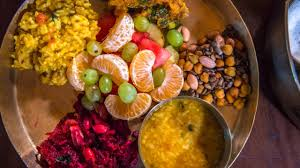
Ayurvedic & Satvik Food
Based on ancient wellness principles, these foods balance doshas (body energies) using herbs, ghee, and mild spices. Common in temples and yogic diets.
Explore more on Wikipedia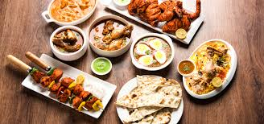
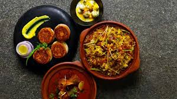
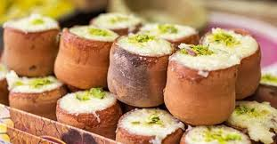
Royal Cuisines - Mughlai & Awadhi
Includes biryani, kebabs, and kormas. Originating from royal kitchens, these dishes are rich, aromatic, and slow-cooked with saffron, nuts, and cream
Explore more on Wikipedia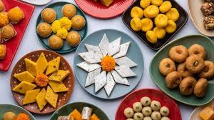
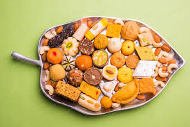
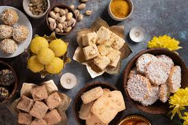
Sweets & Desserts
Each state has its signature - Rasgulla (Bengal), Mysore Pak (Karnataka), Ghevar (Rajasthan), Modak (Maharashtra). Sweets are integral to every Indian celebration.
Explore more on Wikipedia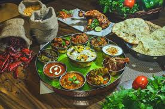
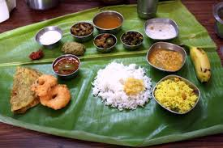
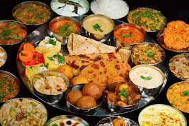
Traditional Thalis
A full meal served on a platter with multiple dishes - Gujarat, Kerala, Punjab, and Andhra Pradesh all have unique versions. It represents the “unity in diversity” of Indian cuisine.
Explore more on Wikipedia